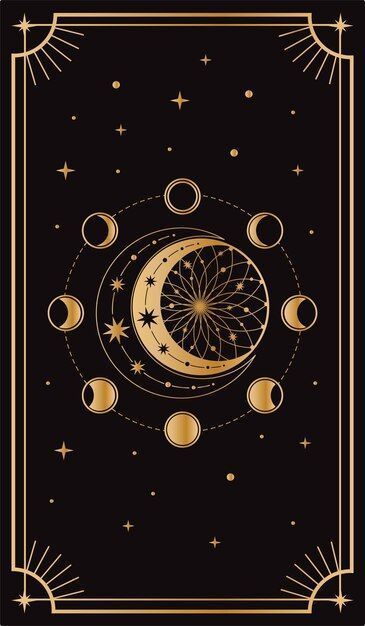

🃏 당신은 The Magician (마법사) 타입입니다!
키워드: 창의적 · 다재다능 · 기회를 잡는 사람
성격 한 줄 요약: "할 수 있다면 해낸다. 기회는 내가 만든다."
🌟 카드의 의미
말재주가 뛰어나고, 어떤 상황에서도 자원을 활용할 줄 아는
마법 같은 능력을 지닌 자입니다.
새로운 아이디어가 많고,
남들이 생각하지 못한 방식으로 문제를 해결합니다.
매사에 '내가 해보면 잘할 수 있어'라는 자신감을 가지고 있습니다.
✨ 이 카드가 속삭이는 강점
당신은 끝없는 창의력의 샘을 지니고 있습니다.
어떤 주제든 손에 쥐면 새로운 무대로 바꿀 수 있지요.
사람들을 끌어들이는 특별한 카리스마와 설득력이 있어,
당신의 말은 단순한 언어가 아니라 '주문(呪文)'처럼 들립니다.
무엇보다도, 생각을 현실로 옮기는 실행력과 순발력이
당신을 더욱 돋보이게 만듭니다.
⚠️ 이 카드의 경고
그러나, 마법사는 빛과 그림자를 함께 지니고 있습니다.
강한 자신감은 때로는 과도한 자만심이 되어 돌아올 수 있습니다.
너무 많은 것을 동시에 이루려다 보면,
정작 중요한 순간에 집중하지 못하고 산만한 그림자에 휘말릴 위험도 있지요.
세상은 당신에게 무대를 내어주었지만,
그 무대를 얼마나 오래 지켜낼지는 결국 당신의 집중력에 달려있습니다.
🧭 예언가의 조언
마법은 단순히 화려함에서 끝나지 않습니다.
집중력과 책임감이라는 두 가지 룬을 붙잡았을 때,
당신의 마법은 잠깐의 불꽃놀이가 아닌,
세상을 바꾸는 위대한 힘으로 완성될 것입니다.